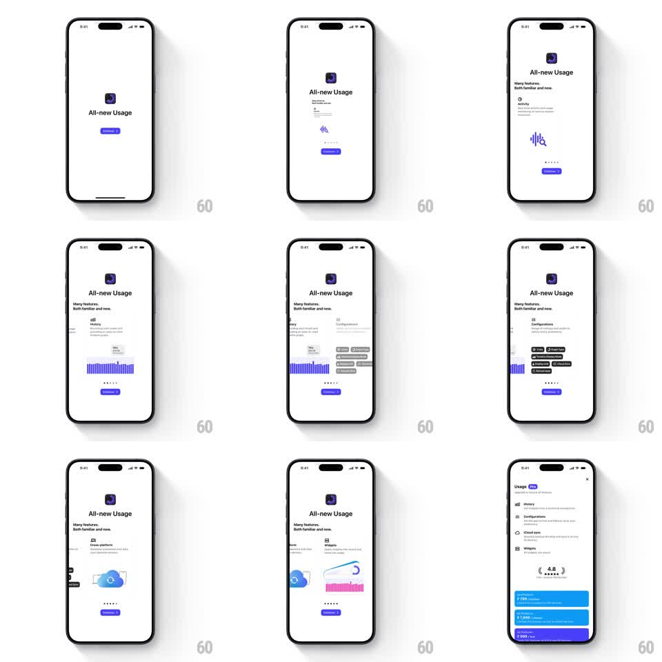

Media
Frame-by-frame

Rebuild this interaction 1:1: Usage's "All-new Usage" onboarding - a paged carousel of feature cards whose purple illustrations pop in, ending with a smooth slide into the app's feature list.

Rebuild this interaction 1:1: Usage's "All-new Usage" onboarding - a paged carousel of feature cards whose purple illustrations pop in, ending with a smooth slide into the app's feature list. ## Integration Integration: stack-agnostic spec - springs given as stiffness/damping, timed motions as duration + curve; map every value to your framework and animation library of choice. ## Scene Usage onboarding, white: the app icon and "All-new Usage" title pinned at top, "Many features. Both familiar and new." subtitle, then a paged card area (feature icon + name + one-liner + a purple illustration: Activity waveform, History bar chart, Configurations pills, Cross-platform cloud, Widgets preview), page dots, and a purple Continue button. Final state: the app's own feature list (History, Configurations, iCloud Sync, Widgets, rating row). ## Motion spec Pattern: paged value-prop carousel with pop-in illustrations. - Entry: icon, title, subtitle fade up (300ms, 80ms apart); the first card's illustration pops (scale 0.7 -> 1, spring ~420/15). - Swipe or Continue pages the carousel: the current illustration scales down and fades left (200ms) while the next enters from the right at 0.8 scale and pops to 1 (spring ~400/16); the feature icon/name/description crossfade with a 12px rise (200ms). - Page dots advance with a stretch (active dot 8 -> 20px, 200ms). - The pinned title block never moves during paging - only the card area swaps. - On the last page, Continue triggers the transition: the whole onboarding slides up and out (300ms, ease-in) as the app's feature list slides in from below (350ms, ease-out), the title's "All-new" treatment crossfading to the plain "Usage PRO" header. ## Calibration - Illustrations are the only purple elements besides the button and active dot. - Exactly one pop per page - the spring must fully settle before the page is interactive. ## Reduced motion Pages crossfade (250ms) at fixed scale; the final transition is a simple fade. ## Don't miss - Descriptions stay two lines max so the card never reflows mid-transition. - The Continue label stays constant - no "Next"/"Done" churn.